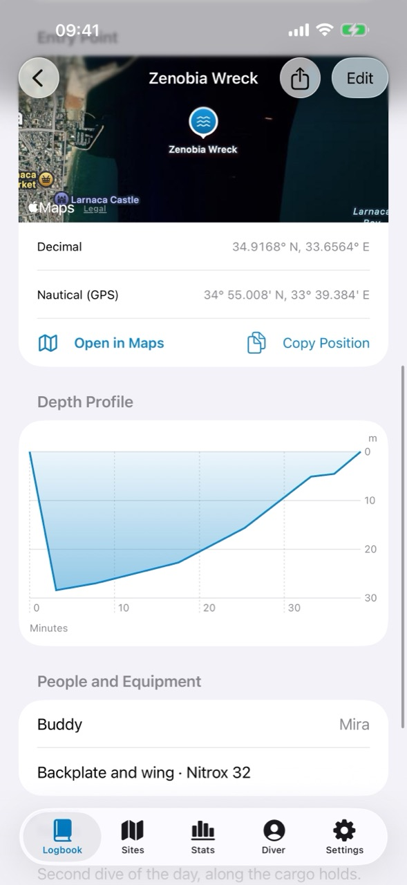
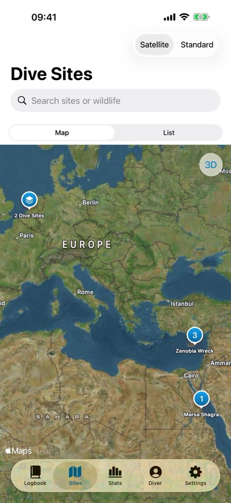
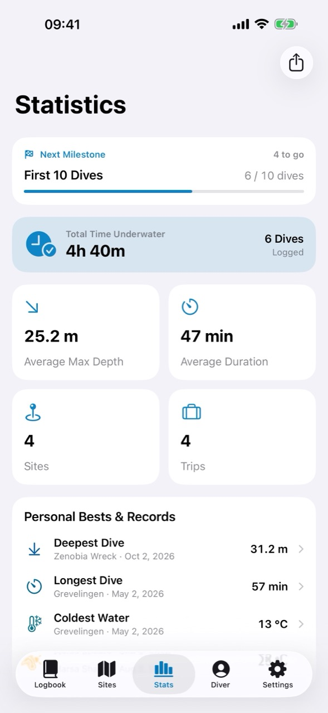
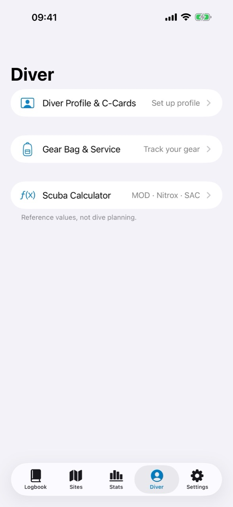

Apple Watch Ultra dives, with their profile
Apple Watch Ultra records depth, time underwater, and water temperature while you dive. Divefolio reads those recordings from the Apple Health app and adds them to your logbook, depth chart and entry point included.
Turn it on in Settings → Sync Dives from Apple Watch. Divefolio never overwrites what you typed.

Every dive site on one map
The Sites tab places each dive site on a satellite or standard map. Sites close together share one pin that opens out as you zoom in, and you can search sites by name or by the wildlife you saw there.

Your diving, in numbers
Stats adds up your time underwater, average depth and duration, sites, and trips, and keeps your records: deepest, longest, and coldest dive. The next milestone shows how far you are from it.
Metric or imperial, set in Settings. Dives are stored in metres and Celsius, so an exported logbook reads the same anywhere.

C-cards, gear, and a calculator
The Diver tab holds your diver profile, emergency contact, and C-cards, ready offline for the boat crew; your gear bag with its service dates; and a scuba calculator for MOD, nitrox, and SAC rate.
The calculator gives reference values from standard training formulas, not dive plans.

Private by default
No account, advertising, analytics, or third-party tracking. Your
logbook stays on your device. Back it up as a
.divefolio package with every photo, or export a UDDF
3.2 logbook for other dive software, or a CSV spreadsheet.
Read the privacy policy.
Divefolio is a journal, not a dive computer or decompression planner. Always follow your training and your certified dive computer.